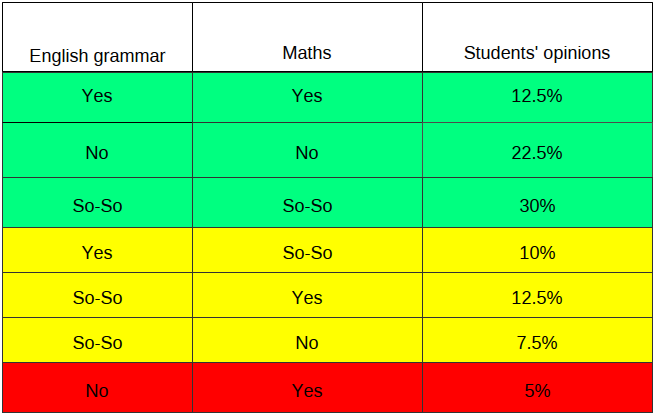

Results
The questionaires were used to assess students' own competence in English grammar and mathematics. The students were given three options to answer which were: yes, no, and so-so. It was, however, the correlation between the answers which we were interested in. The same answers for two areas, irrespective of the opinion, meant that there is a correlation between them. I considered it to be a partial correlation when students assessed one of the areas as ‘so-so’. There was no correlation when students gave to distinct answers e.g. Yes for mathematics and No for English grammar. As a result I got the percentages as follows:
TABLE 1:

A CORRELATION
A PARTIAL CORRELATION
NO CORRELATION
T1. Percentages of students' opinions of the levels of competency in English grammar and maths.
After the instruction students were given a short test to find out if they were able to follow the rule. To be able to compare the results with their opinions I used the percentages to establish the competence using the same criteria as the students’ answers in the questionnaires as yes ( percentage of correct answers between 67% and 100%), no ( percentage between 0% and 33%), and so-so ( percentage between 34% and 66%).
TABLE 2:
A CORRELATION
A PARTIAL CORRELATION
NO CORRELATION
T2. Percentages of students' opinions and test results of the levels of competency in English grammar and maths.
Looking at the results, the considerable discrepancies between the students’ opinions and the results of the test can be seen. The 12.5 % for good competence in both areas has increased up to 84.21% of what students could actually do. A slight decrease in the percentage of the rest of the students’ answers is evident.
Although it is the correct answers that give us information to work with, I also looked at the incorrect answers and we noticed:
English grammar
- overgeneralization (the extension of grammatical rule beyond it’s normal use (Crystal, 2003) e.g. ‘waterred’ (18% of students applied the rule of doubling the last consonant even though the stress in this word makes it an exception to the rule), ‘listenned’ (23%),’plaied ‘or ‘plaid’ (18% even though it is an irregular verb). There were examples of applying the rules by spelling ‘help’, ‘explain’ and ‘disturb’ as ‘helped’, ‘explained’, ‘disturbed’.
- confusion with the subject- using ‘have’ or ‘has’ with the subjects they normally do not go with e.g. Sarah have, I has, the woman have, we has..
Mathematics
Some of the incorrect answers in mathematics were as follows:
- wrong number for discount taken away e.g. £2 instead of £2.50 but the correct calculation applied e.g. subtraction
- ‘incorrect’ method used as opposed to one shown and explained e.g. multiplication to work out the perimeter instead of given addition to do
All of the above examples of inappropriate answers are still a proof of students applying the rules which they were instructed with.